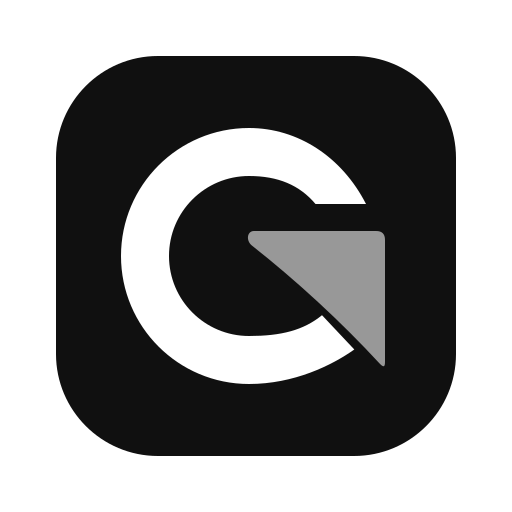

Review the new version before updating.

The browser edition stays here. Choose your operating system to find a published native build.
Downloads appear only after publishing and integrity review. You can continue using the WebAssembly edition.